Tactile Toolkit
Working with designers Jenny Lanier and Janelle Arita, we sought to create a tool to enable us to better communicate with our development manager Randy Horowitz. Randy has a visual impairment that didn't allow him to experience our work as easily as those with sight. In meetings to review designs, the best we could do was describe what appeared on the screen which didn't leave either party feeling good.
After a number of iterations and exploration of various ideas, we landed on making a physical toolkit similar to a component or pattern library. We focused on making the toolkit fast to assemble, easy for non-sighted to read, and simple to DIY.
Big Design Dallas 2019 - Tactile Toolkit Summary
Designers often think of accessibility as a box to check before shipping a product. But what does it mean to be delightfully accessible instead of hitting the benchmark of accessibility best practices?
Furthermore, how can we better incorporate accessibility into the design process and enable those with visual impairments to provide feedback earlier? Today, visually impaired users can only provide feedback with a developed application that is compatible with a screen reader. By that time, many changes would require code refactoring, which would increase company expenses and delay improvements. Excluding valuable input from vision impaired users, a group of almost 300 million people, due to technical limitations is unacceptable and can be mitigated by the process we have developed through IBM Design Thinking.
Related Links
Images

 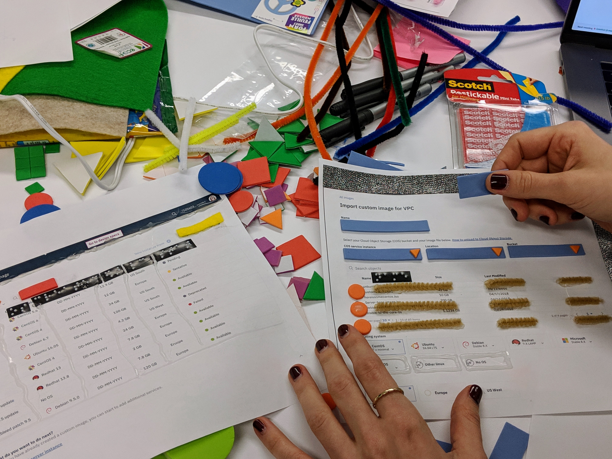
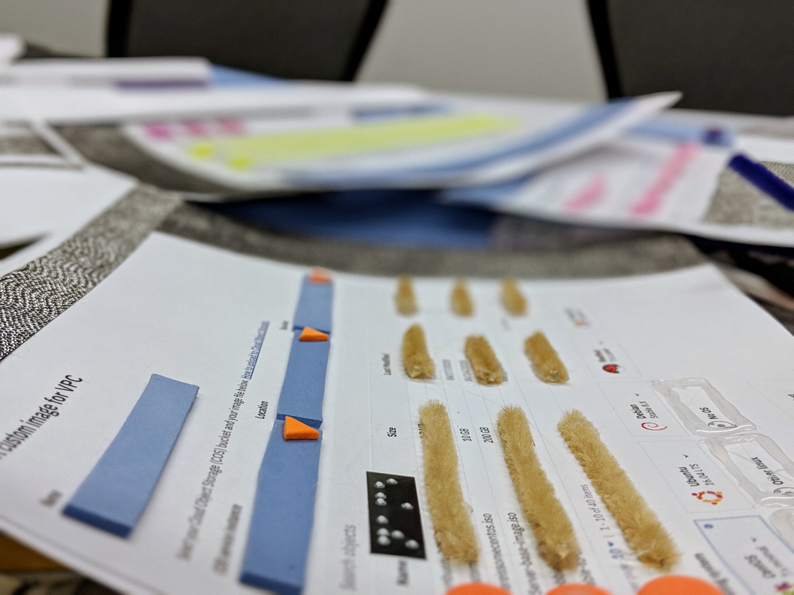
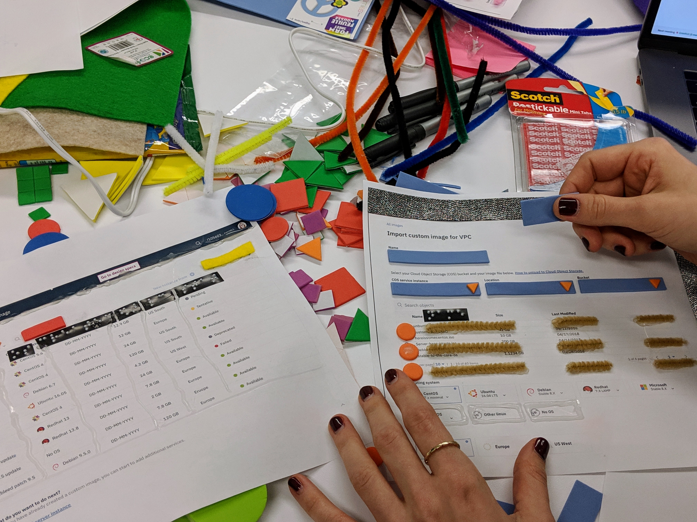
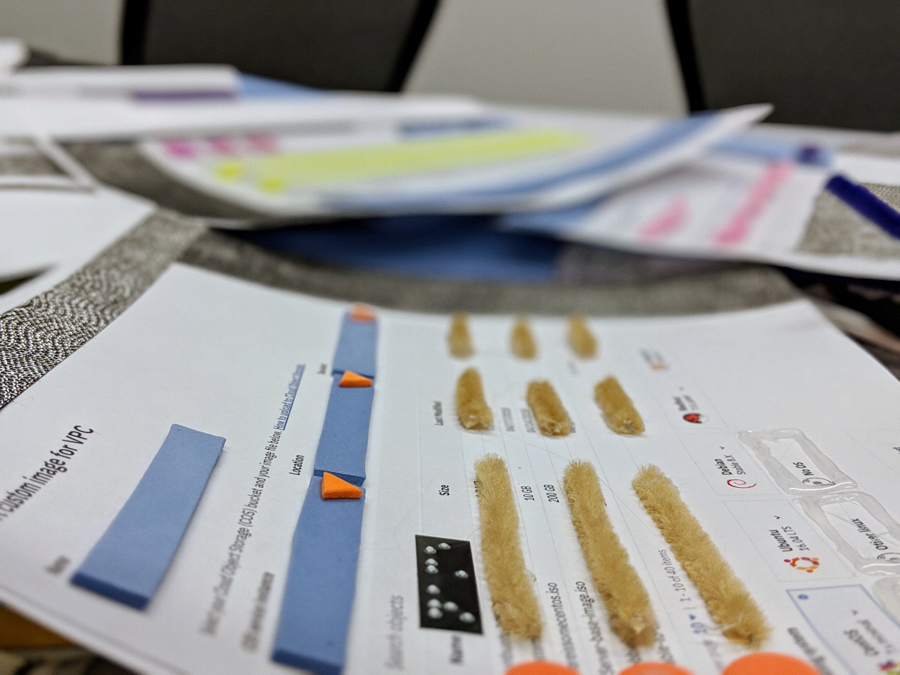


 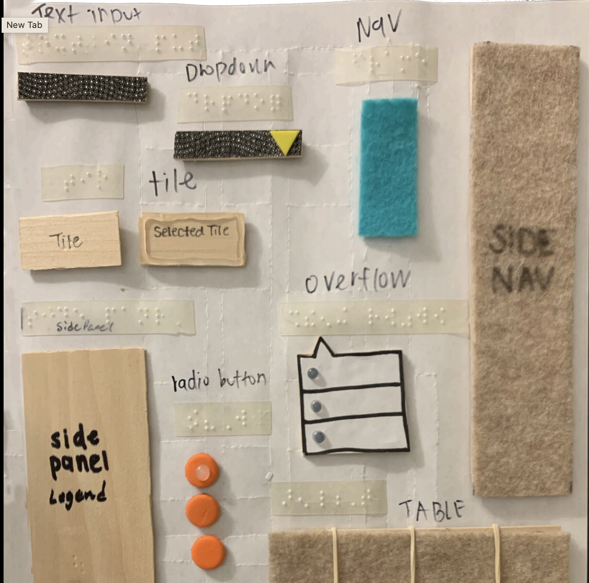
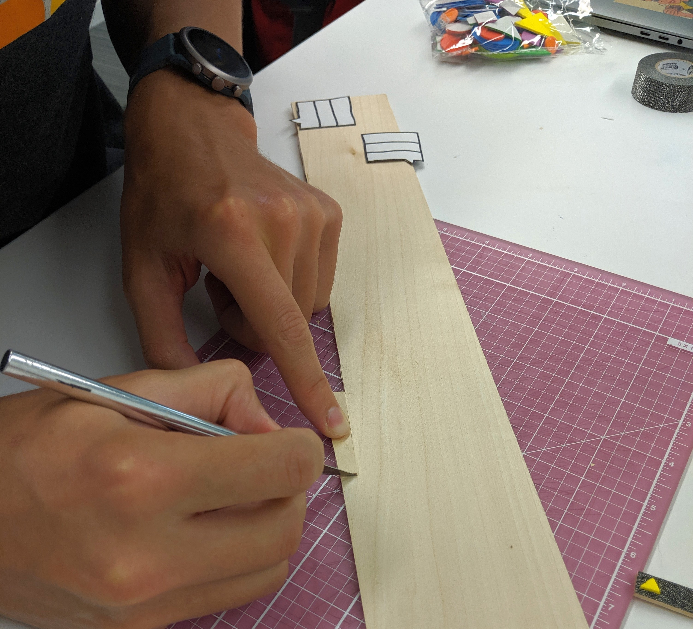
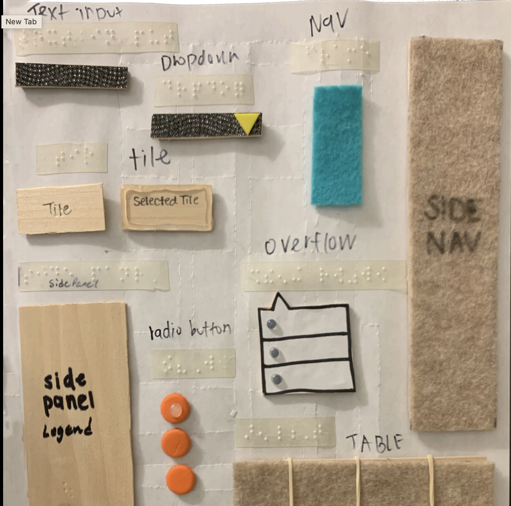
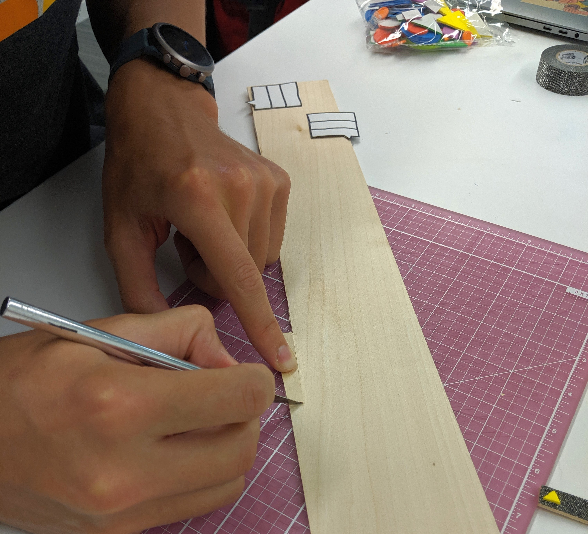

 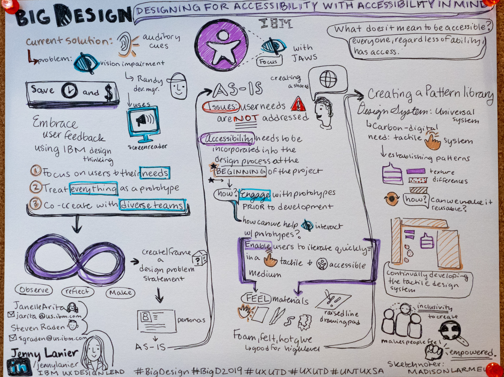
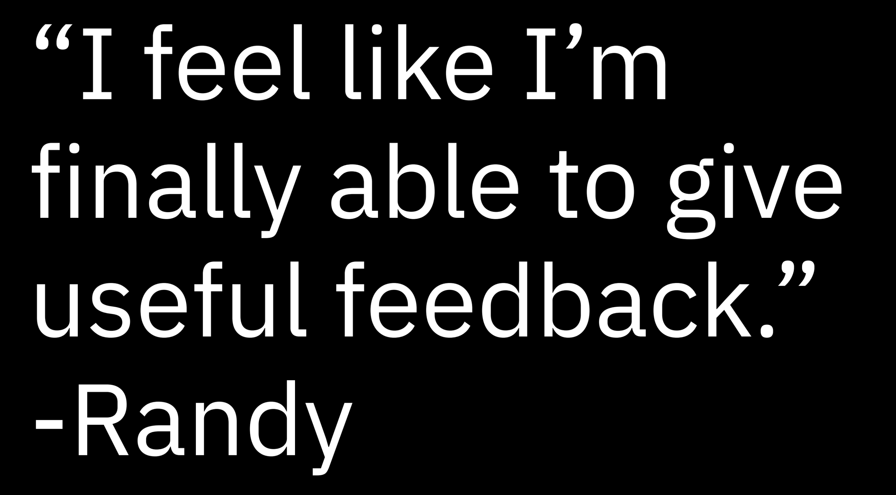
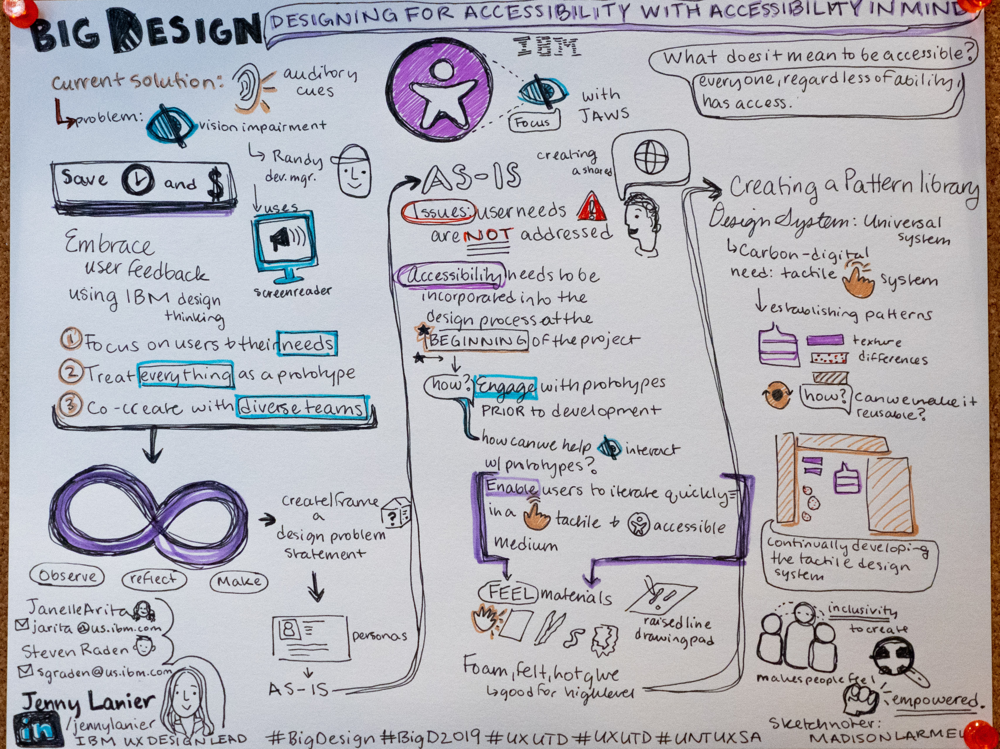
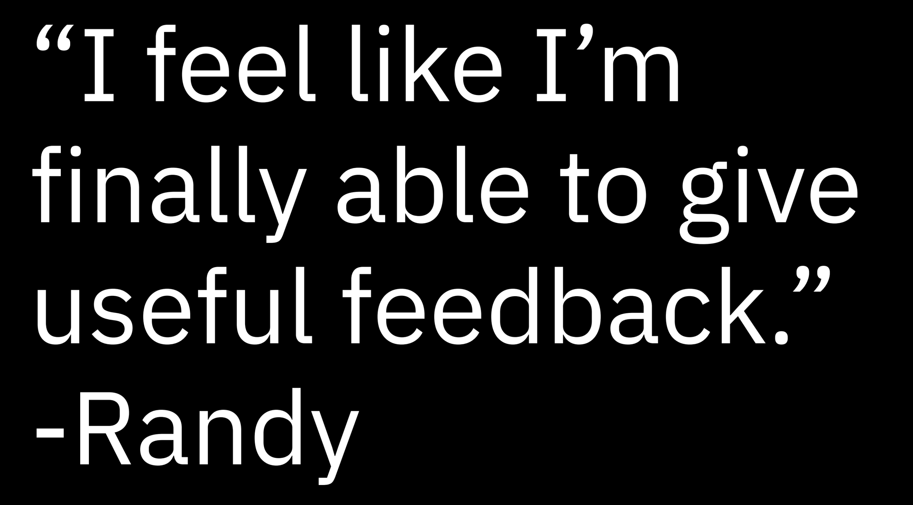